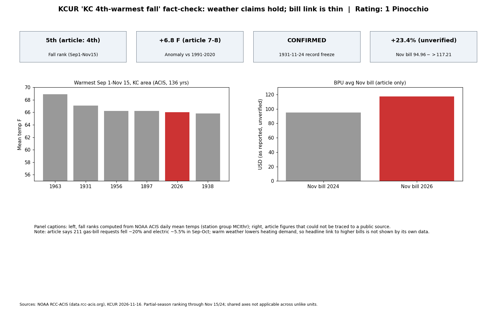

The weather facts check out; the economic claims could not be verified and the headline link is weak. Overall: 1 Pinocchio.
| Claim | Result | Confidence |
|---|---|---|
| 4th-warmest fall, 139 yrs | 5th (to Nov 15) / 3rd (to Nov 24) | medium-high |
| 7-8 F above normal | +6.8 F vs 1991-2020 | medium |
| Latest first freeze Nov 24, 1931 | True | high |
| BPU bills, usage, United Way 211 | Not checkable here | n/a |